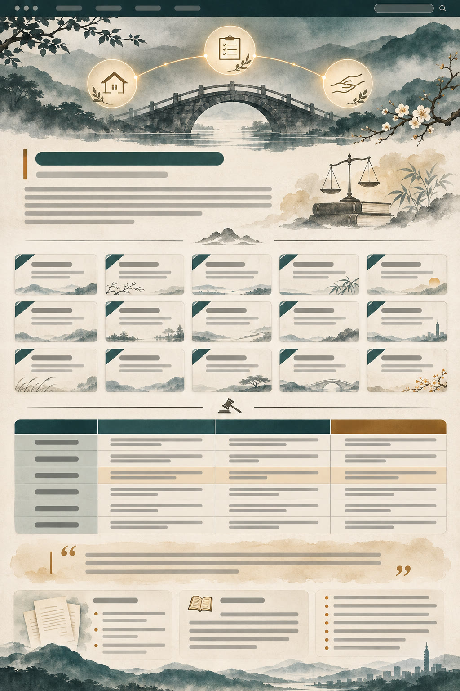
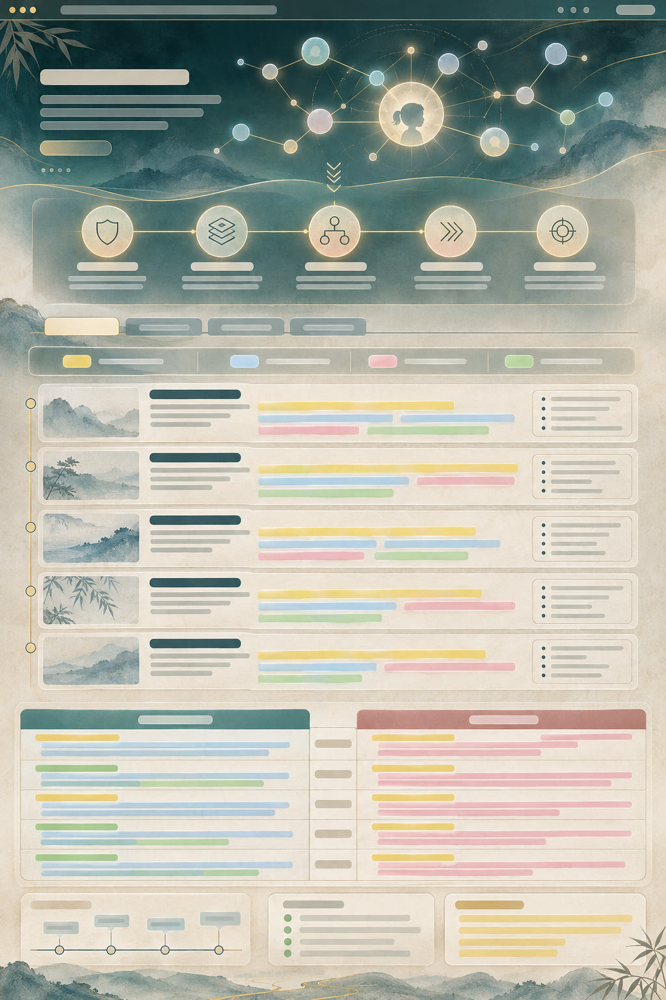
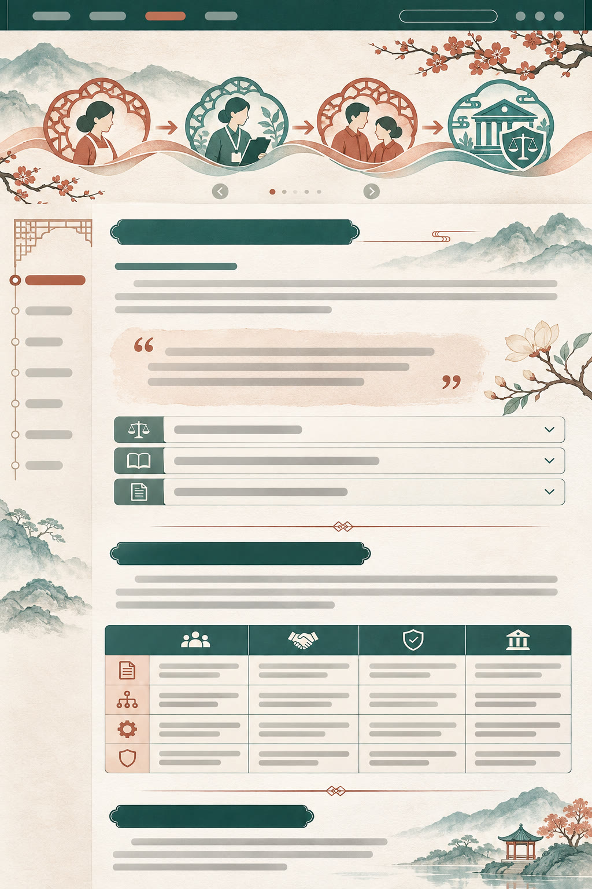
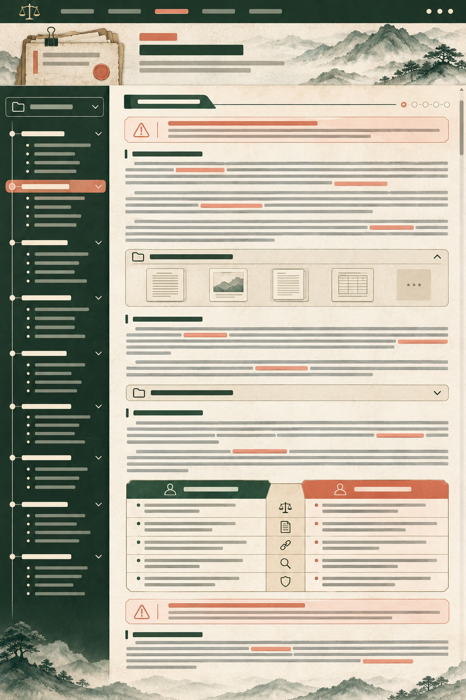

辯方重點
機構或行政規範不當然落到個別收出養社工；資訊、權限、可行措施與因果關係都須具體證明。

先釐清程序
「合議庭評議」不表示辯方申請已被接受，也不代表審理已正式開始。何時進入正式庭審，仍須視合議庭對調查聲請與程序安排的決定。
概念一｜墨橋資訊鏈
若關鍵時點能同時與親屬及保母聯繫、追問並傳遞孩子狀況者實際上只有陳尚潔，這可支持義務個人化與實際控制的討論；但仍須逐一證明聯繫時點、可取得資訊、可促成措施及可能效果。
可聯繫，不等於已證明具備作為可能性或結果避免可能性。概念三｜證據星圖
保證人地位只是門檻；刑事歸責仍必須完成完整的反事實證明鏈。

概念四｜責任流動
下列為全文第十五章的閱讀入口；完整表格保留於下方全文。

機構或行政規範不當然落到個別收出養社工；資訊、權限、可行措施與因果關係都須具體證明。
分工影響義務內容與可期待程度，但已知或應知風險時，未必可只以分工界線排除查證、聯繫或升級處置。

完整文件
本文依原文件的文字順序排版；十五個主章各有一張現代水墨章節圖與章名覆蓋，文字仍可選取、搜尋與複製。各方主張及待證事項均以原文標示的核對界線為準。
若全文未載入，請開啟完整閱讀頁。